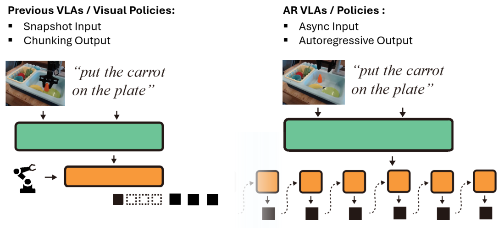

AR-VLA: smooth action streaming
AR-VLA: Autoregressive Action Expert for Vision-Language-Action Models
Accepted in Robotics: Science and Systems (RSS) 2026
1 INSAIT 2 KU Leuven
Main Idea

Most VLA policies follow a snapshot-to-chunk loop: observe a frame, predict a chunk, execute, then reset for the next chunk. This creates temporal discontinuities and amnesia between chunks. AR-VLA keeps the same perception backbone for semantic understanding, but replaces chunk heads with a standalone autoregressive action expert.
Main Results
AR-VLA shifts robotics from reactive “snapshot” control to continuous streaming action generation. This architecture provides two core advantages: inherent spatio-temporal consistency from async-interval autoregressive generation, and native history-awareness for multi-stage decision making.
Smoothness Comparisons
In side-by-side comparisons with a flow-matching baseline of the same Pi-Zero-scale structure, AR-VLA produces visibly smoother trajectories and reduces micro-stutters at chunk boundaries.
Flow-Matching Baseline: inter-chunk stutters
openVLA: longer per-action generation time
History-Awareness Experiments
History-awareness is critical when perception becomes ambiguous.
Extended Push-T: PushT2 task
Across long-horizon tasks such as extended Push-T with multi-goal completion, autoregressive memory prevents confusion between goals.
Diffusion Policy: Focus only on one goal
Diffusion Policy: Not aware of the achieved goal
AR: History-Aware, reach goal in order
AR: History-Aware, reach goal in order
Realworld: Stack 3 objects task
In hidden-object settings (for example, the battery-under-cup scenario), AR-VLA remembers latent task state and reaches 81.2% average completion rate where snapshot policies collapse once the object leaves view.
Flow-Matching Baseline 1
Flow-Matching Baseline 2
AR-VLA 1
AR-VLA 2
Standard Benchmarks
Beyond smoothness and memory benefits, standard simulation and real-robot benchmarks show AR-VLA can directly replace chunk-based action heads while matching or surpassing specialist and generalist state-of-the-art baselines.
LeRobot Environments (Specialist Policy)
LeRobot PushT
LeRobot Aloha pick
LeRobot Aloha insert
Bridge to Simpler Benchmark (VLA, zeroshot)
Simpler Task 1
Simpler Task 2
Simpler Task 3
Simpler Task 4
Bridge to Real-Robot Tasks (VLA, zeroshot)
Put chess on chessboard
Put Corn between Cups
Put Pink Cup on blue Plate
Put Eggplant in the pot
Put Lobster in the pan
Realworld Recovery / Success-After-Fail
Corn Recovery Sequence
Eggplant Recovery Sequence